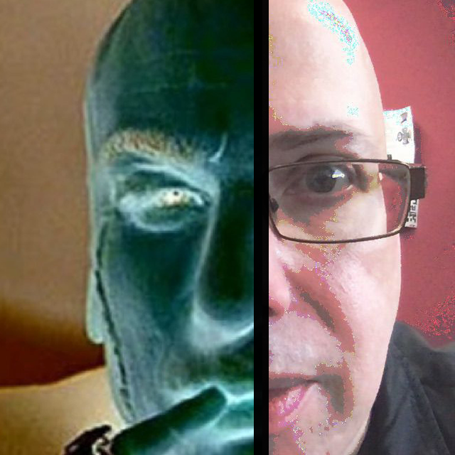

Fractured


Fractured is a series of glitch images I made by taking photos around San Jose and glitching the images source code on audacity using the invert effect then bringing the image in photoshop to invert it again. This created 2 unique glitches where I would then overlapp in photoshop to create this fractured effect.
The purpose of this series is to commentate on people prefering to meet virtualy rather than physically. My younger cousins in particular rather sit home and play videogames rather than hang out and get food, go to a park, or walk around at a mall.
--------------------------------------------------------------------------------------------------------------------
Fractured also describes how my professor James almost shattered my dreams of doing this glitch art series for my final.
JK please don't dock away points :)